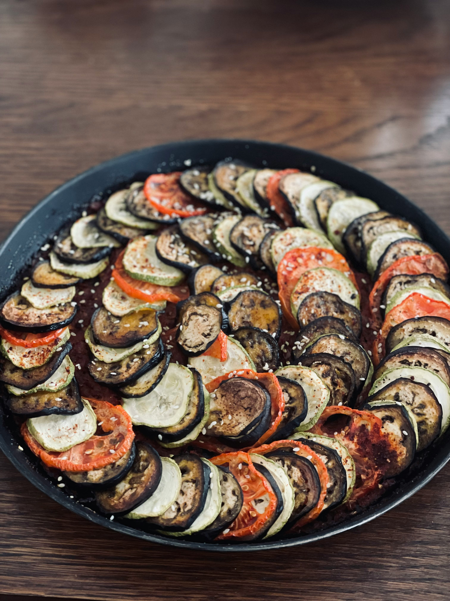
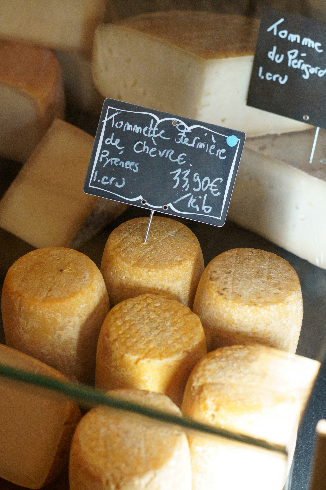
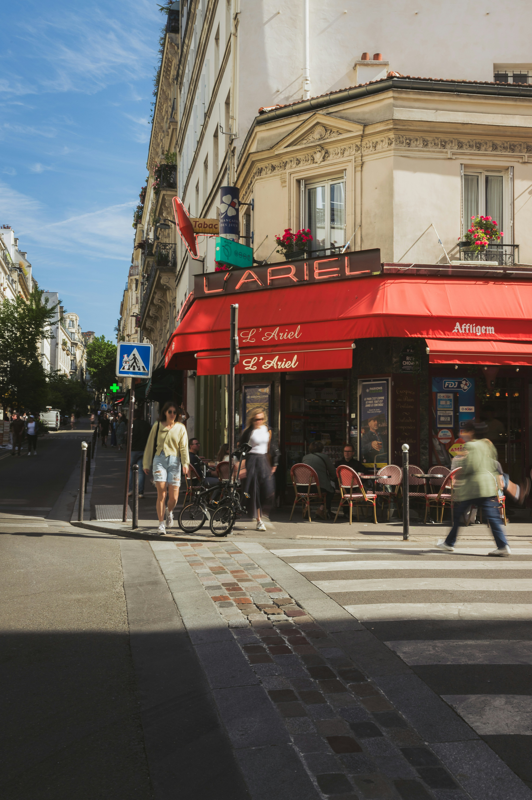

Introduction to French Cuisine
Food is at the heart of daily life in France. From morning walks to the local bakery to unhurried evening meals, French cuisine celebrates fresh seasonal ingredients and regional traditions.
- Boulangerie: Artisanal bakeries for fresh baguettes and croissants.
- Bistro & Brasserie: Casual restaurants serving hearty traditional meals.
- Fromagerie: Specialty shops dedicated to regional cheeses.
| Food Item | Where to Find It | Typical Price |
|---|---|---|
| Croissant or Pain au Chocolat | Boulangerie | €1.20–€1.80 |
| Crêpe (Sweet or Savoury) | Crêperie / Street Stand | €4–€10 |
| Steak Frites | Bistro / Brasserie | €16–€24 |
| Formule Midi (2-Course Lunch) | Local Café / Bistro | €15–€22 |
Boulangerie & Pastries

Under French law, a shop can only call itself a boulangerie if it bakes its bread from scratch on the premises. Grabbing a warm baguette tradition is a daily ritual.
For something sweet, visit a pâtisserie to try flaky mille-feuille, fruit tarts, éclairs, and colourful macarons.
Classic French Mains

Every region in France has its own signature dishes. In Burgundy, slow-cooked Boeuf Bourguignon is a staple, while Brittany is famous for savoury buckwheat galettes.
Other must-try classics include Ratatouille from Provence, Coq au Vin, and rich French Onion Soup topped with melted Gruyère cheese.
Cheese & Open-Air Markets

France produces over 1,000 varieties of cheese, ranging from soft, creamy Brie and Camembert to nutty aged Comté and tangy Roquefort.
Visiting a morning town market is the best way to sample local cheeses, olives, and fresh produce straight from regional farmers.
French Dining Etiquette

Knowing a few local customs makes eating out in France much smoother:
- Say "Bonjour": Always greet staff with Bonjour when entering a café, shop, or bakery.
- Ask for the bill: Waiters will not rush you—ask for "L'addition, s'il vous plaît" when you are ready to pay.
- Free tap water: Ask for a "carafe d'eau" for complimentary tap water instead of bottled water.
- Tipping: Service is included in the bill by law (service compris), though leaving €1–€2 for great service is appreciated.